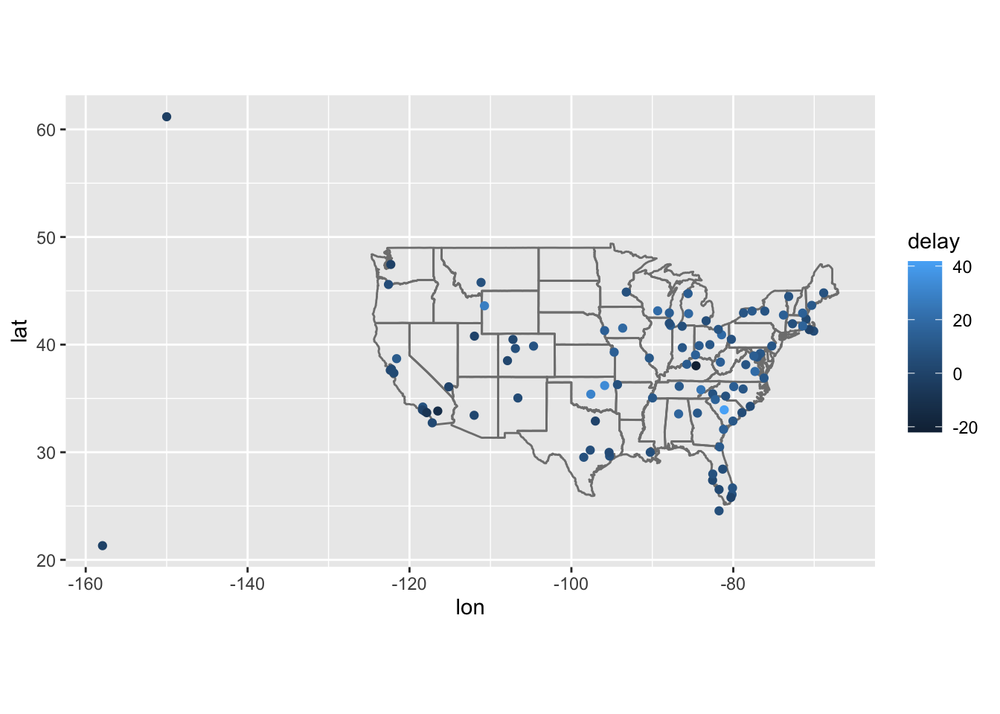
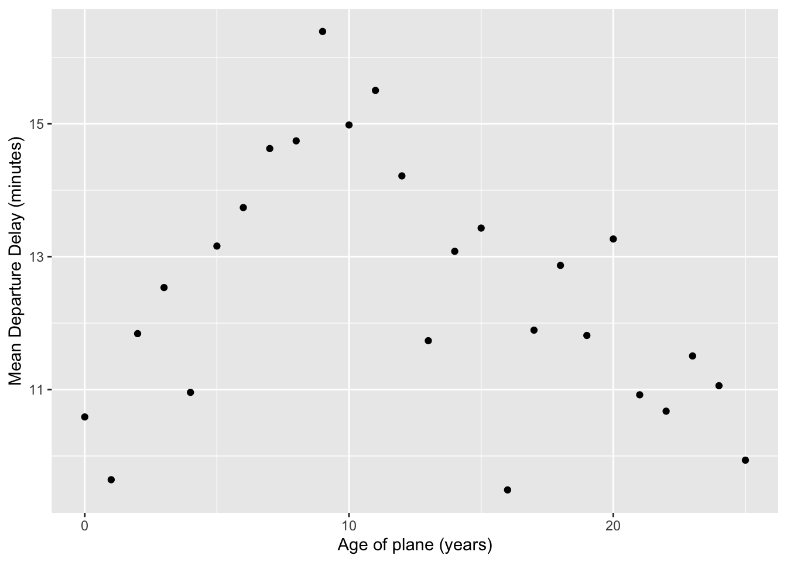
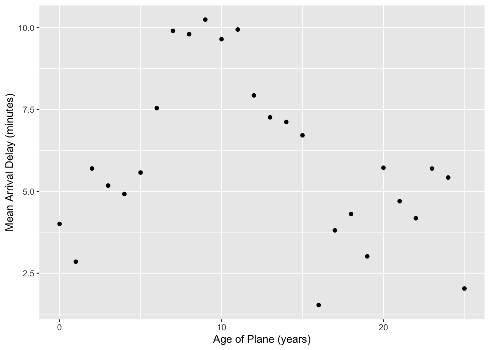

Lab 7: Relational data and tidy data
Goals for today
Practice connecting relational data with
joinfunctions indplyrContinue to practice data tidying with
tidyrContinue to practice data visualization with
ggplot2Continue to practice data transformation with
dplyrIntegrate 1), 2), 3) and 4) to continue our exploration of the
babynamesdataset, and ...
General instructions
- Today, we will combine the
joinfunctions and data transformation tools indplyr, the data visualization tools inggplot2, and the data tidying tools intidyrto continue our exploration of the patterns and trends in thebabynamesdataset, and ...
- To start, first open a new RMarkdown file in your course repo, set the output format to
github_document, save it in yourlabfolder aslab7.Rmd, and work in this RMarkdown file for the rest of this lab.
Exercise 1: Baby names (50 min)
Use data tidying, transformation, and visualization to answer the following questions about baby names in breakout rooms
| top boy names | top girl names |
|---|---|
 |
 |
Instructions:
- Load the required packages and read in the data with the following code:
# Load required packages
library(tidyverse)
library(knitr)
library(babynames) # install.packages("babynames")
babynames %>% head() %>% kable()| year | sex | name | n | prop |
|---|---|---|---|---|
| 1880 | F | Mary | 7065 | 0.0723836 |
| 1880 | F | Anna | 2604 | 0.0266790 |
| 1880 | F | Emma | 2003 | 0.0205215 |
| 1880 | F | Elizabeth | 1939 | 0.0198658 |
| 1880 | F | Minnie | 1746 | 0.0178884 |
| 1880 | F | Margaret | 1578 | 0.0161672 |
- The
babynamesdataset provides the number of children of each sex given each name from 1880 to 2017 in the US. All names with more than 5 uses are included. This dataset is provided by the US Social Security Administration.
- As a reminder, to get familar with this dataset, you might want to use functions like
View(),dim(),colnames(), and?.
- Make sure that you use figures and/or tables to support your answer.
- We provide some possible solutions for each question, but we highly recommend that you don't look at them unless you are really stuck.
Question 1: What are the 6 most popular boy names and girl names of all time? How has the popularity of each of these names changed over time? This time, use the slice_max() function in combination with a join function to answer this question.
Hint: You can start by finding the 6 most popular names for each sex in one step using group_by() and slice_max(), and then use a filtering join function to subset the original dataset.
One possible solution click to expand
# number of passengers in the dataset
top_6_names <- babynames %>%
group_by(sex, name) %>%
summarise(total_count=sum(n)) %>%
ungroup() %>%
group_by(sex) %>%
slice_max(order_by = total_count, n = 6)
babynames %>%
semi_join(top_6_names, by = c("sex", "name")) %>%
ggplot(aes(x=year, y=prop, group=name, color=sex)) +
geom_line() +
facet_wrap(~name)
Note:
slice_max(order_by = total_count, n = 6)selects 6 rows with the highest values intotal_countfor each unique entry in the grouping variable (in this case, males and females)
Question 2. Find the names that have not appeared in this dataset until 2010, but were used more than 1000 times 2010-2017 (boys and girls combined). Do you recognize any pop culture influence in these?
Hint: You may start by creating a variable to indicate whether a row is before or after 2010.
Hint: pivot_wider() may be helpful
Hint: you may need to replace NAs with 0s for this exercise. mutate(), ifelse(), and is.na() may become handy.
One possible solution click to expand
new_names <- babynames %>%
mutate(threshold = ifelse(year >= 2010, "after", "before")) %>%
group_by(name, threshold) %>%
summarise(total_count = sum(n)) %>%
pivot_wider(names_from = threshold, values_from = total_count, names_prefix = "count_") %>%
mutate_all(~replace(., is.na(.), 0)) %>%
filter(count_before == 0, count_after >=1000)
new_names %>%
kable()| name | count_after | count_before |
|---|---|---|
| Cataleya | 4013 | 0 |
| Dalary | 1174 | 0 |
| Daleyza | 6023 | 0 |
| Kataleya | 1327 | 0 |
| Khaleesi | 1964 | 0 |
| Neymar | 2164 | 0 |
| Zendaya | 1544 | 0 |
babynames %>%
filter(name %in% new_names$name) %>%
ggplot(aes(x=year, y=n, color=sex)) +
geom_line() +
facet_wrap(~name)
Note: mutate_all(dataset, ~replace(., is.na(.), 0)) is an efficient way to replace all NAs in a dataset with 0s.
Question 3. Find the 12 most popular unisex names. How have the proportion of girls for each of them changed over time?
The definition of unisex names is arbitrary, but for this exercise, let's define them as names which have proportion of girls between 10% and 90% across all time.
Hint: You may start by summing over years in order to get a list of unisex names
Hint: pivot_wider() may be helpful
Hint: you may need to replace NAs with 0s for this exercise. mutate(), ifelse(), and is.na() may become handy.
One possible solution click to expand
unisex_names <- babynames %>%
group_by(name, sex) %>%
summarise(total_count = sum(n)) %>%
pivot_wider(names_from = sex, values_from = total_count, names_prefix = "count_") %>%
filter(!is.na(count_M), !is.na(count_F)) %>%
mutate(total_count=count_M+count_F, f_proportion = count_F / total_count) %>%
filter(f_proportion<0.9, f_proportion>0.1) %>%
arrange(-total_count)
unisex_names %>%
head(12) %>%
kable()| name | count_M | count_F | total_count | f_proportion |
|---|---|---|---|---|
| Willie | 448702 | 146148 | 594850 | 0.2456888 |
| Kelly | 81550 | 471024 | 552574 | 0.8524180 |
| Terry | 422580 | 96883 | 519463 | 0.1865061 |
| Jordan | 369745 | 130158 | 499903 | 0.2603665 |
| Taylor | 109852 | 317936 | 427788 | 0.7432093 |
| Alexis | 62928 | 336623 | 399551 | 0.8425032 |
| Leslie | 112689 | 266474 | 379163 | 0.7027954 |
| Jamie | 85299 | 267599 | 352898 | 0.7582899 |
| Shannon | 51926 | 294878 | 346804 | 0.8502728 |
| Robin | 44616 | 289395 | 334011 | 0.8664236 |
| Angel | 226719 | 94837 | 321556 | 0.2949315 |
| Tracy | 61164 | 250772 | 311936 | 0.8039213 |
unisex_names %>%
head(12) %>%
ggplot(aes(x=count_M, y=count_F)) +
ggrepel::geom_label_repel(aes(label=name)) +
geom_point(data=unisex_names)
babynames %>%
filter(name %in% unisex_names$name[1:12]) %>%
pivot_wider(names_from = sex, values_from = c(n, prop)) %>%
mutate_all(~replace(., is.na(.), 0)) %>%
mutate(total_count=n_F+n_M, f_proportion = n_F / total_count, average_popularity = (prop_F + prop_M)/2) %>%
ggplot(aes(year, f_proportion, group=name)) +
geom_line() +
geom_point(aes(size = average_popularity)) +
facet_wrap(~name) +
ylab("proportion of girls")
Recap (5 minutes)
Share your findings, challenges, and questions with the class.
Exercise 2
END LAB 4